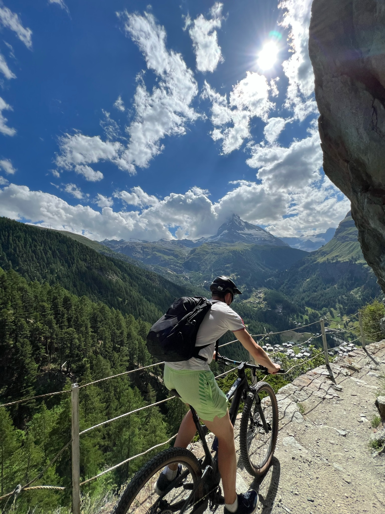

Where I'm going
I am looking for the next challenging role in my early career. I am comfortable in both manufacturing and research environments. I recognize that teams of every scale, from multinationals to startups, require diversity and cohesion to perform their best. I personally find in-person mentorship to be worth its weight in gold.
I am looking for a demanding role in the nuclear, chemical, or EPC industry. I have a particular interest in control theory, cryogenics, and test engineering. In addition to these interests, I'm aware of how much I have yet to explore.
I enjoy the welcoming and intelligent community here in Huntsville. While moving would be bittersweet, I am certainly open to embracing my next opportunity wherever it may be.